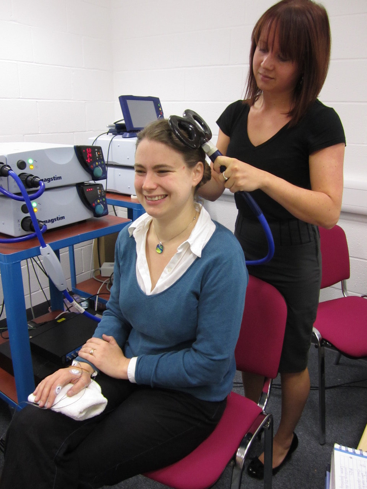
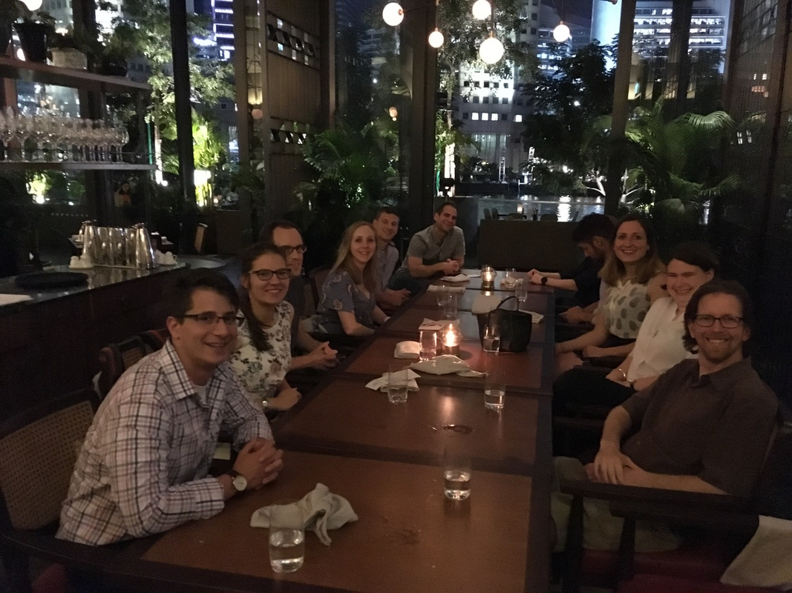

|
By Nils Muhlert In much of biomedical science the questions dictate the methods. This often means we have to draw on knowledge from different disciplines, or combine data from different modalities to converge on a likely solution. In a first for the OHBM blog we asked a senior PI to interview a more junior PI within their institution. This was always going to lead to interesting discussions - but when Heidi Johansen-Berg, director of the new Wellcome Centre for Integrative Neuroimaging in Oxford, agreed to interview the multi-modal brain mapper Charlie Stagg, it became clear that we would be acquiring a full spectrum of insight into scientific and career-related issues. What follows is a wide-ranging discussion on moving from medicine to pure research, combining information about neurotransmitters from MR spectroscopy with neurostimulation techniques and the potential benefits of mapping from preclinical to clinical imaging. Heidi Johansen-Berg (HJB): Charlie, you initially trained as a medic, but then decided to go down the pure science route – what persuaded you to take on a life of research rather than being in the clinic? Charlie Stagg (CS): Yes – I did medicine as an undergraduate in the UK. As part of that, in Bristol University, I had the chance to do an extra year halfway through, at which point I did an undergrad degree in physiology and fell in love with the subject. I’ve always been very interested in the brain and wanted to be a neurologist, then through my undergrad research and in my clinical years I realised that I wanted to do something more interventional and that there weren’t many treatments for chronic stroke recovery – something I was interested in at the time. It’s very common in the UK for clinicians in training to do a PhD some years after their medical training, so I came to Oxford to do that. I fell in love with it and didn’t want to stop! I’ve been an academic ever since. Quite a lot of our work is clinical research, I work with a number of clinicians, and I think the training is useful in dealing with the medical side and dealing with patients. It’s way too much fun to go back to doing just clinical work. HJB: So you’ve not regretted that decision – you’ve not wished you could do a bit more. CS: No. There are certainly days where you wonder what you’re doing – but overall, no! HJB: I think we all get that [laughs]. In terms of your research, a lot of it has focussed on the role of GABA in behaviour. As we know, this neurotransmitter is receiving increasing attention, particularly as the methods to measure it have improved over the years. What most excites you about GABA, what have been the recent breakthrough findings in the role of GABA in healthy and disordered brain function? CS: It’s a really exciting question – as there are a lot of recent papers on this. When I started there wasn’t much work on it – it was a real niche subject. I used to have to start all of my talks by having to explain what spectroscopy was. I remember people coming up at the end of talks saying “I didn’t know you could do that, that’s amazing.” And now, I never have that – and that’s fantastic. Much of our work has been on primary motor areas and motor systems in particular. That’s been very interesting from my point of view. But there’s been a lot of recent work taking it out of the motor system that’s been really exciting. James Kolasinski’s paper (who’s now in Cardiff at CUBRIC) took a really simple hypothesis from the animal literature, that local inhibition and cortical organisation should relate to behaviour. He really beautifully showed that it did, in absolutely the way we’d expect. That’s a really nice, elegant study as it hadn’t been measured in humans – but showed that what we’re measuring with GABA has at least some relevance to what we see in animals. You then get people starting to answer interesting questions, not only about immediate behaviour within that region but how it relates to networks. For instance, there’s a paper on overlearning from Watanabe’s lab where they showed increases in GABA as memories stabilise. That’s really exciting, as we’d been previously looking at decreases in GABA as we learn. If our understanding of physiology is correct then we should see increases as the memories stabilise – so that was really exciting to see the first demonstration of that in humans. All of this work has been done in primary regions – such as primary sensory regions or the motor system – and people like Helen Barron in Tim Behrens lab have done some really cool things, asking really abstract questions. You imagine that lateral inhibition is really important for somatotopy or retinotopy but linking it to memory and more advanced cognitive processes is really cool. It asks a lot of questions about what is going on. HJB: And I guess that’s where the ability to ask these questions in humans really does make a difference. One of the limitations of MRS has perhaps been the lack of precision, compared to manipulating GABA in animal models. Potentially that’s been a criticism about why you would do it imprecisely in humans when you can do it precisely and specifically in animals. Presumably you feel the fact of doing it in humans makes a difference? CS: Absolutely – it’s something that I think about a lot. It is an indirect method and we can use multi-modal approaches to triangulate what we’re seeing, but it’s still not as direct as doing invasive recordings and never will be. So we need a good reason for doing it in humans – and the complicated cognitive work that Helen Barron’s doing is absolutely one of those reasons. I’d also argue that human hand control, and particularly the relearning of that in the timescales after stroke, is very difficult to model in animals. The use of the hand is incredibly complex, the separation between primary motor and somatosensory cortex is pretty unusual in primates. We’re beginning to believe that the primary motor cortex works quite differently in terms of the physiology compared to the primary somatosensory cortex. That distinction is important, so there aren’t ready animal models that recapitulate all of that. There are certainly arguments for carrying this work out in humans. HJB: Relatedly, the ability to measure neurotransmitter levels using MRS has been around for decades but has never really had the popularity of other structural and functional techniques. What do you think has held it back – and why do you think this may be changing in recent years? CS: It is true. I do remember people finding out that we could measure neurotransmitter levels and wondering why we don’t do it more often. It’s really hard – particularly at lower field strengths. The signal we’re dealing with is 10,000 times smaller than the water signal we use for fMRI, so we’re dealing with much poorer signal-to-noise. So trying to get measures of chemicals at the millimolar range even at 3T is challenging and takes a long time. The advent of 7T being more widely available has massively boosted that SNR and made it much more achievable to get reliable measures within a sensible time frame of a few minutes. If you look at our early work on the 3T, it took 20-25 minutes to get a sensible measurement. This is possible, but actually quite difficult in the context of studying learning. It limits the questions you can ask and makes it more difficult for the patients. This is perhaps why there has been less work in neurological and psychiatric groups – the timescales are just not clinically feasible. But suddenly, because the timeframes are shorter with ultra-high field MRI you now don’t need to have a big team of skilled physicists before you can do this. You still need a good physicist and quite a lot of time and a 7T but it’s becoming much more feasible to take these approaches and use them in a similar way that you would with fMRI. HJB: One thing that strikes me as a bit unusual with MRS on the analysis side is that other MR modalities have seen massive amounts of research into signal processing – but in MRS there seem to be few, relatively simple, approaches. But the field of signal processing has changed massively over decades. The analysis of MRS doesn’t seem to have changed a lot in that time. For something like the OHBM community you’d think there would be a wealth of talent of people who could develop much more sensitive measures for extracting useful information from noisy spectra – why hasn’t that happened? CS: I think it’s chicken and egg. There haven’t been that many people using it, there hasn’t been that drive and the simple spectra that you get, the edited spectra, are reasonably easy to analyse with simple approaches: you just fit a Gaussian. Now people are doing interesting things, more complicated things at 7T; we’re dealing with much more complicated signals. There are gold standard methods out there but people are developing their own. To some extent, some of the questions that are important for fMRI just aren’t important for MRS. You usually get just a single voxel, so all the issues around clustering and thresholding, all those issues are less important, but yes, it’s a field that’s wide open right now. HJB: Yeah, you’re on the lookout for talent! There are now methods with multi-voxel MRS, there will be a spatial component. People are starting to acquire functional MRS over time. It’s getting a lot more multi-dimensional than it has been. It’s certainly an exciting topic. CS: It is! One of the things we’re getting excited about is work with Uzay Emir, who’s set up some fantastic sequences that we’re playing with and getting to grips with. One of them is a combined fMRI-fMRS. So for each TR you get BOLD signal and a single voxel decent spectra. That gives us the temporal resolution that we’ve never had before, so we’re beginning to ask new questions. It feels very much, from talking to people who were there, that’s it’s like the beginning of fMRI. We have this new thing and no-one’s quite sure what to do with it. We’re amazingly lucky to be situated here in Oxford, where the FSL guys are sitting next door and we can just go and talk and work with them. But there’s a lot of room for improvement. If you’re interested, then there’s an entire career there. HJB: And how have you found the challenge of fusing information from MRS and non-invasive brain stimulation, techniques like TMS, tDCS. What do you think are the opportunities in bringing those approaches together? CS: Partly, my first ever study on the MR was combining the two as a first year PhD student. I didn’t realise that this was difficult.  Charlie participating in a TMS experiment HJB: It was cutting-edge! CS: Yeah, it was the thing to do, so I went and did it! But it is technically challenging. The reason that I just went and did it as a first year student is a massive testament to the support that we have. The physicists and radiologists are amazing at setting up sometimes weird bits of kit – and there’s a load of expertise around on the brain stim side. Doing it is one thing and we’ve now worked through it enough to be confident and happy with it. But interpreting the results is a whole different question! That’s ongoing and lots of people are becoming interested in it. HJB: It’s quite an exciting possibility – one of the big limitations of brain imaging is that we’re stuck with correlations. You put someone in the scanner and see what lights up and you can correlate activity with behaviour but you never get causal inference. So to be able to perturb the system and observe the consequences does certainly add to the toolset. So it’s powerful for asking causal questions. CS: Yes, I think so. But there are obvious caveats to what we can assume about the specificity – and we use tDCS rather than TMS for lots of good reasons, but it does have slightly more questions about the spatial specificity. With all the techniques there are questions if you’re thinking about physiology. Quite a lot of our work a while ago was trying to ascertain whether tDCS, and TMS to an extent, affect the brain in a similar way to the naturally occurring changes when we learn something. Are we engaging the same systems and doing the same thing to induce plasticity – or are we doing something completely different? It looks like there are very similar mechanisms involved, which makes sense but that’s a key assumption that we’re making. We’re still doing it and I still think it’s a really important thing to do. Looking at the OHBM symposium this year, it’s really encouraging to see how much brain stimulation work is being presented – how many novel techniques are presented. There’s also a satellite event, so clearly people are beginning to realise that BOLD is brilliant and can tell us many things but, as you say, it’s very correlational and doesn’t tell us that much about the physiology. Once we understand the regions and networks that are important we can then go in and look much more specifically at given nodes within that using MRS and using stimulation to get a feel of what’s happening. HJB: And it feels like the brain stimulation field is evolving, getting more sophisticated and more nuanced. There has been scepticism about some of those techniques because of things like variability or lack of replication and I think there’s an acknowledgement that these effects are very variable, and that needs to be taken into account, but it could actually be incredibly interesting; there might be interesting reasons for that variability. Trying to prove our experiments, capture that variability at the individual subject level and understand it, could really increase the use of those techniques for studying healthy brains. It could also help explain the cases where you get the completely opposite response for the same stimulation. For some people that’s a reason to shy away from the technique altogether but for others they’re asking “why is that?”. It does seem that there are interesting reasons for the variability, which could include genetics or brain geometry, that could help us understand the responses. CS: Yes, and it has been an interesting time over the last few years in the brain stimulation literature. We hope we’re coming to a conclusion where we’re saying that it is variable but that could be interesting. As with any technique we need to be able to use it properly – we need to control it properly, carry out double-blinded, placebo-controlled trials. HJB: It’s just like the early days of brain imaging, there were a lot of non-perfect (shall we say) imaging studies in those days but that doesn’t mean that imaging is a flawed technique, you just have to do the experiments right. CS: And it’s like 10 years ago people were tweeting about the dead salmon – now there are other things coming up – the field is very similar. HJB: Here in Oxford, as you know we have core-funding from the Wellcome Trust to create this new centre for neuroimaging, the Wellcome Centre for Integrative Neuroimaging (WIN), building on the success of places like FMRIB and OHBA over the years. With that, we’ll have access to new facilities – ultra high-field MR but also new facilities for animal MRI. What kind of things are you most excited about, once you have all this equipment at your disposal? CS: The WIN is really exciting for many reasons. One of the big differences it has made already is in people – having a lot more physicists around to develop these techniques, getting the brain stimulation working in all of the scanners and also to get the sequences to work and be reliable and trouble-shooting. Having physics-support to do that, which is provided by the Wellcome Trust, is just amazing. Oxford is also wonderful and has a huge number of very, very good people working on similar things. But it’s spatially spread out across the site. While that’s still true of the WIN, having one centre has begun to get people to talk to each other in ways that they haven’t before. There are people here that I’ve never spoken to – so it’s been good to get together and see what we could do. One of the things I’ve been interested in for a while is that, while human MRS is important, there’s no doubt that it’s an indirect measure, and there are some key questions about what it is that we’re picking up in terms of the underlying physiology. It would be fantastic to look at that, if we can do very specific interventions. Having a small bore animal scanner which allows us to do similar things to what we do in humans – the same sequences, as well as complicated behaviour and genetics – is just very exciting.  Charlie (second from right) meeting for a joint-lab dinner at OHBM2018 in Singapore HJB: Yes, that’s what I’m particularly excited about – being able to use imaging as a bridge between lab-based neuroscience and the things we do with patients. All of us using neuroimaging have been frustrated at the lack of specificity in what’s going on in physiological terms. Having the techniques that allow us to bridge that gap actually allows us to carry out the manipulations in animal models, but then relate those signals to what we see in humans. That’s something that I think is really exciting.
CS: We’ve been working very specifically with Jerome Sallet on ultrasound modulation and have a grant to develop it in humans. He’s doing it in primates. We’ve been working really hard on that, and it’s been fantastic to work with him to see what it actually looks like – what behaviour changes he’s getting, what imaging changes he’s getting. And it’s starting to inform what we can expect to see. That’s concrete evidence that’s already coming out. HJB: Yes, bringing together people across those species boundaries – and starting to train junior people to carry out cross-species experiments, those like Helen Barron, individual scientists who are doing fMRI, but then understanding those signals in terms of electrophysiology, and using optogenetic manipulations. You then have the macaque work from people like Jerome, Rogier Mars, and so bringing them together with people with imaging analysis expertise like Mark Jenkinson, Saad Jbabdi, will help us build tools to seamlessly move from rodent space, to macaque space, to human space will make it all much easier for people to cross those species boundaries. To finish up, what advice would you have to early career researchers who are about to start their careers in brain imaging or multi-modal brain mapping? CS: I think it’s difficult – and it’s a case of do what I say and not what I do [laughs]. It’s all about the questions. You have to work out what the question is that you find exciting and interesting – I made a joke about it earlier but it is hard and you have days when you’re wondering why you’re doing it and it has to be something that really excites you. HJB: Yes, it has to be something you care about and want to know the answers to. CS: That you really, really want to know the answers to! And then you need to work out what techniques you need to be able to answer that. For me, that did and does involve multi-modal neuroimaging. We’re starting to use MEG to look at brain oscillations, which I think is the key mechanism by which we’re getting links from inhibition, GABA MRS measures, to the functional connectivity changes we see in plasticity. I think oscillations are really important, probably the route through which that happens. Having worked out that that is what we’ll need to do did it. Working, again, with excellent people within Mark Woolrich’s group has certainly helped. So you need to work out the question, what techniques you need to be able to answer it and then make sure you’re somewhere that can support that. One of the downsides of doing the multi-modal work that my group do (we do MRS, MRI, brain stimulation, MEG) is that you end up as a jack-of-all-trades and not an expert in any given one of them. Working somewhere that you have genuine experts in all of those, and where they’re happy to help, is really important and one of the reasons for me being here – is because we have all that expertise covered and we can do those tricky experiments. HJB: Yes, that two-way interaction where you have impressive experts developing methods, which can then inspire researchers to ask new questions. But you need them there as well to know the pressing questions – whether those are clinical questions or neuroscience questions. That can hopefully steer method development to answer particular questions. I think it’s always tempting for some of us to get wooed by a particularly cool method or new analysis approach and lose sight of why we’re doing it, or what question we’re trying to answer. So I think your point that the question needs to come first, particularly for those of us in the more neuroscience side, is really important. CS: Yes I think it may be different for the methods-development people. HJB: Yes, but even then you need to keep in mind what question this method answers that can’t already be answered. Not just what cool engineering or mathematical principles can I implement. Really, what’s the point of it? It’s important for people to keep that in mind and use that as a way of prioritising and steering your work. Ideally you get a combination of something that uses cool cutting-edge computer science, but also allows people to do something that they couldn’t do before. CS: And my other standard advice for early career researchers is to move between labs – but I’m very conscious that neither of us did! Though we did travel strategically, I spent a little time in Florida and UCL and you spent 6 months in Montreal. HJB: [laughs] Yes, I completely agree, the standard advice is to move around and see various different labs, travel the world. That’s absolutely something that benefits people’s career development but for me personally it wasn’t the right thing to do at different stages of my career. So I’ve pretty much been here in Oxford throughout. I’ve tried to get that experience through collaborating very widely locally here in Oxford and elsewhere in the UK and further afield. We can get inspiration and avoid going stale in the same location through collaboration and meeting people in that way. So if you can’t move round, don’t worry too much about it.
0 Comments
Your comment will be posted after it is approved.
Leave a Reply. |
BLOG HOME
Archives
October 2022
|
 RSS Feed
RSS Feed
{kind=link}
{kind=link}